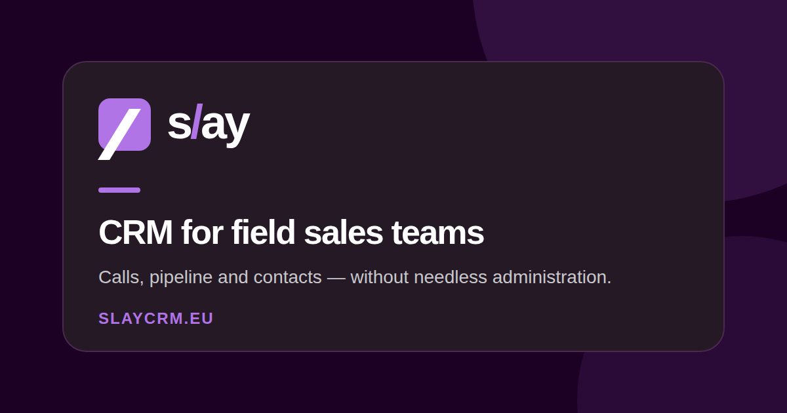

SlayCRM - Modern CRM-plattform
En modern CRM-plattform med AI-agenter isolerade i Kubernetes. Hanterar databasändringar via naturligt språk med möjlighet att ångra ändringar, samt ett telefoniflöde (46elks + rösttolkning) som omvandlar röstsamtal till CRM-åtgärder med SMS-bekräftelse.